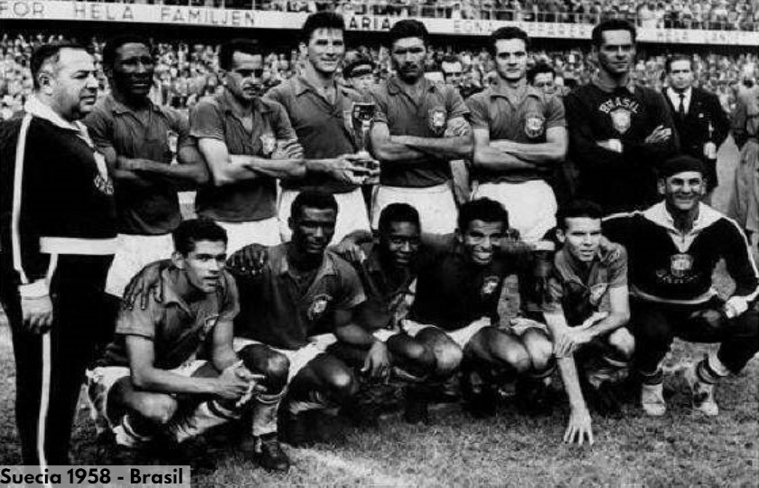
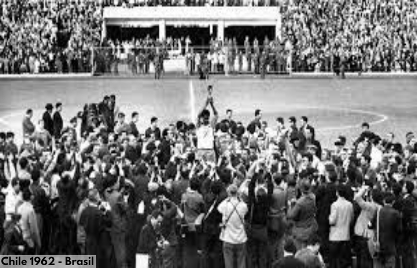
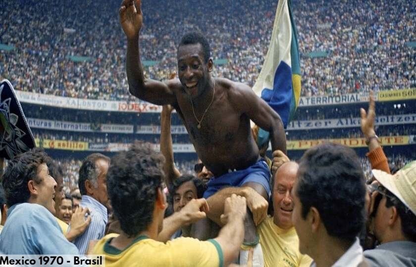
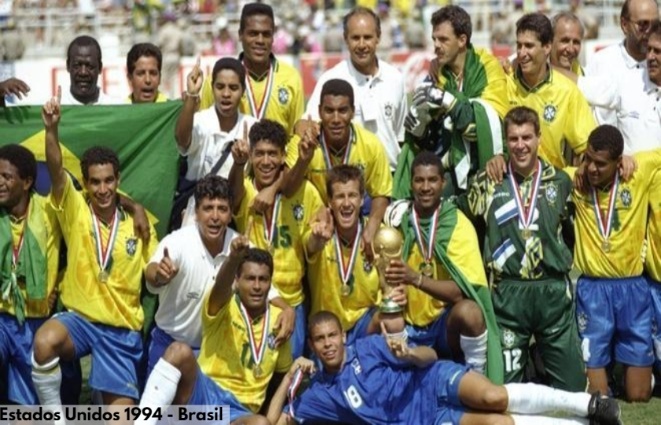

En 1958, Brasil consiguió su primer título en Copas del Mundo, además de ser un campeón del mundo indiscutible, con un equipo conformado por 22 jugadores brillantes, titulares y suplentes, en cada posición. Por otra parte este Mundial vio el nacimiento de una estrella futbolística, un adolescente de tan solo 17 años llamado Edson Arantes do Nascimento, conocido como "Pelé". En aquel entonces Pelé marcó en cuartos de final en la victoria 1:0 contra Gales, luego consiguió tres de los cinco goles con los que su selección se impuso a Francia 5:2 en las semifinales y anotó dos más en la final que se jugó el 29 de junio de 1958 en el Estadio Råsunda de Estocolmo.
En ese partido Brasil se encontró pronto con un marcador en contra ante el equipo anfitrión. Corrían solo 3 minutos de juego cuando Suecia marcó su primer tanto. Solo sería un espejismo porque aquella mágica noche Brasil consiguió, por un contundente 5:2, lo que llevaba años buscando: su primer Campeonato Mundial. Se coronaba como el primer campeón no europeo en Europa. Sin duda alguna la gran figura del partido fue Pelé ya que marcó 2 goles en aquella final y fue el máximo artillero de su selección con 6 goles.
| Dorsal | Jugador | Posicion |
|---|---|---|
| 1 | Castilho | Arquero |
| 3 | Gilmar | Arquero |
| 2 | Bellini | Defensor |
| 4 | Djalma Santos | Defensor |
| 8 | Oreco | Defensor |
| 9 | Zozimo | Defensor |
| 12 | Nilton Santos | Defensor |
| 14 | De Sordi | Defensor |
| 15 | Orlando | Defensor |
| 16 | Mauro Ramos | Defensor |
| 5 | Dino Sani | Mediocampista |
| 6 | Didi | Mediocampista |
| 13 | Moacir | Mediocampista |
| 19 | Zito | Mediocampista |
| 7 | Zagallo | Delantero |
| 10 | Pele | Delantero |
| 11 | Garrincha | Delantero |
| 17 | Joel | Delantero |
| 18 | Jose Altafini | Delantero |
| 20 | Vava | Delantero |
| 21 | Dida | Delantero |
| 22 | Pepe | Delantero |
| Vicente Feola | Director tecnico |
El segundo título mundial para los brasileños llegó en 1962 en Chile. Brasil nuevamente se corona campeón del mundo revalidando así el título conseguido en 1958. El astro del Mundial de 1958, Pelé, salió cojeando tras una lesión muscular sufrida en el segundo partido contra Checoslovaquia en la fase de grupos y se perdió el resto del campeonato. No obstante, los brasileños, comandados por Garrincha y Zagallo, aunque menos arrolladores que en Suecia, lograron clasificarse para los cuartos de final. En esa instancia derrotaron a la selección inglesa por 3-1. En semifinales vencieron al local Chile 4-2 y en la gran final, el Scratch volvió a encontrarse con la selección de Checoslovaquia. Tras ir perdiendo 1-0, logró voltear el marcador con goles de Amarildo, Zito y Vavá, y así se alzó con el bicampeonato mundial.
| Dorsal | Jugador | Posicion |
|---|---|---|
| 1 | Gilmar | Arquero |
| 22 | Castilho | Arquero |
| 2 | Djalma Santos | Defensor |
| 3 | Mauro Ramos | Defensor |
| 5 | Zozimo | Defensor |
| 6 | Nilton Santos | Defensor |
| 12 | Jair Marinho | Defensor |
| 13 | Bellini | Defensor |
| 14 | Jurandir | Defensor |
| 15 | Altair | Defensor |
| 4 | Zito | Mediocampista |
| 8 | Didi | Mediocampista |
| 16 | Zequinha | Mediocampista |
| 17 | Mengalvio | Mediocampista |
| 7 | Garrincha | Delantero |
| 9 | Coutinho | Delantero |
| 10 | Pele | Delantero |
| 11 | Pepe | Delantero |
| 18 | Jair Da Costa | Delantero |
| 19 | Vava | Delantero |
| 20 | Amarildo | Delantero |
| 21 | Zagallo | Delantero |
| Aymore Moreira | Director tecnico |
El tercer título mundial para los brasileños llegó en 1970, al presentarse con un equipo que es considerado como uno de los mejores de la historia. Antes de disputarse el Mundial, Pelé regresó a la selección nacional a pesar de haber hecho votos de no volver a disputar otro Mundial. Brasil se apoderó con autoridad del trofeo Jules Rimet, con jugadores de la categoría de Clodoaldo, Gérson, Rivelino, Tostao, Jairzinho, Pelé y Carlos Alberto. La final se disputó en el estadio Azteca de la Ciudad de México frente a unos 107.000 espectadores escenario donde Brasil se impuso a la selección de Italia por 4-1. Era la consagración de Pelé como único futbolista en el mundo en ganar tres veces una Copa del Mundo. El máximo anotador de la selección brasileña en dicho torneo fue Jairzinho con siete goles, seguido del propio Pelé con cuatro.
Al ser el primer equipo en adjudicarse tres veces el torneo, Brasil se quedó con la Copa en propiedad, cuando fue robada durante una exhibición en la sede de la Confederación Brasileña de Fútbol en Río de Janeiro. El trofeo nunca fue recuperado.
| Dorsal | Jugador | Posicion |
|---|---|---|
| 1 | Felix | Arquero |
| 12 | Ado | Arquero |
| 22 | Leao | Arquero |
| 2 | Brito | Defensor |
| 3 | Wilson Piazza | Defensor |
| 4 | Carlos Alberto | Defensor |
| 6 | Marco Antonio | Defensor |
| 14 | Baldochi | Defensor |
| 15 | Fontana | Defensor |
| 16 | Everaldo | Defensor |
| 17 | Joel Camargo | Defensor |
| 21 | Ze Maria | Defensor |
| 5 | Clodoaldo | Mediocampista |
| 8 | Gerson | Mediocampista |
| 9 | Tostao | Mediocampista |
| 11 | Rivelino | Mediocampista |
| 18 | Paulo Cesar | Mediocampista |
| 7 | Jairzinho | Delantero |
| 10 | Pele | Delantero |
| 13 | Roberto | Delantero |
| 19 | Edu | Delantero |
| 20 | Dario | Delantero |
| Zagallo | Director tecnico |
En Estados Unidos 1994 Brasil se encargó de ponerle el sabor y el ritmo de samba a la Copa del Mundo. Aquella selección brasileña era comandada por el técnico Carlos Alberto Parreira y estaba plagada de jugadores de categoría como: Cláudio Taffarel, Mauro Silva, Mazinho, Branco, Raí, Cafú, Romario, Bebeto, Dunga, Ronaldo y Leonardo.
En Fase de grupos le ganaria a Rusia por 2-0 con goles de Romario y Rai, en el segudo partido 3-0 a Camerun con goles de Romario, Marcio Santos y Bebeto, y cerraria con un empate a 1 contra Suecia con gol de Romario. En ocatavos de final se enfrento al local a quien vencio por 1-0 con gol de Bebeto. En cuartos de final se enfrentaria en un duro partido a Paises Bajos ganandole 3-2 con goles de Romario, Bebeto y Branco. Se volveria a encontrar con Suecia en semifinales pero esta vez ganaria 1-0 con gol de Romario.
En la final se enfrento a Italia despues de que el partido terminara 0-0 se llego a la definicion por penales donde los jugadores italianos Franco Baresi, Daniele Massaro y el emblemático Roberto Baggio erraron sus disparos para un marcador final de 3-2 a favor de Brasil. Así, el equipo sudamericano, dirigido por Parreira, entró a la historia por todo lo alto al convertirse en el único tetracampeón mundial.
| Dorsal | Jugador | Posicion |
|---|---|---|
| 1 | Taffarel | Arquero |
| 12 | Zetti | Arquero |
| 22 | Gilmar Rinaldi | Arquero |
| 2 | Jorginho | Defensor |
| 3 | Ricardo Rocha | Defensor |
| 4 | Ronaldao | Defensor |
| 6 | Branco | Defensor |
| 13 | Aldair | Defensor |
| 14 | Cafu | Defensor |
| 15 | Marcio Santos | Defensor |
| 5 | Mauro Silva | Mediocampista |
| 8 | Dunga | Mediocampista |
| 9 | Zinho | Mediocampista |
| 10 | Rai | Mediocampista |
| 16 | Leonardo | Mediocampista |
| 17 | Mazinho | Mediocampista |
| 7 | Bebeto | Delantero |
| 11 | Romario | Delantero |
| 18 | Paulo Sergio | Delantero |
| 19 | Muller | Delantero |
| 20 | Ronaldo | Delantero |
| 21 | Viola | Delantero |
| Carlos Alberto Parreira | Director tecnico |
En la copa mundial disputada en Corea-Japon Brasil tenía grandes expectativas por tener en su nómina a jugadores de primer nivel. Impulsados por el juego brillante de los "Tres R" (Ronaldo, Rivaldo y Ronaldinho) y Kaká, Brasil ganó su quinto campeonato en la Copa Mundial de Fútbol. En la primera fase, Brasil compartió el grupo C junto con Turquía, China y Costa Rica. En este grupo Brasil ganaría todos sus encuentros y quedaría primera con 9 puntos y +8 en goles a favor. Ganó sus encuentros de octavos de final ante Bélgica (2-0), cuartos ante Inglaterra (2-1) y semifinales ante Turquía (1-0) hasta fraguarse un lugar en la final.
La final opuso dos de los equipos más exitosos en la historia de la competición: Alemania y Brasil. El portero alemán Oliver Kahn había sido el mejor jugador del torneo, pero no fue capaz de mantener imbatible su portería. De esta manera Ronaldo venció los fantasmas de Francia 1998 y anotó los dos goles del triunfo. El resultado final fue 2-0
| Dorsal | Jugador | Posicion |
|---|---|---|
| 1 | Marcos | Arquero |
| 12 | Dida | Arquero |
| 22 | Rogerio Ceni | Arquero |
| 2 | Cafu | Defensor |
| 3 | Lucio | Defensor |
| 4 | Roque Junior | Defensor |
| 5 | Edmilson | Defensor |
| 6 | Roberto Carlos | Defensor |
| 13 | Belletti | Defensor |
| 14 | Anderson Polga | Defensor |
| 16 | Junior | Defensor |
| 7 | Ricardinho | Mediocampista |
| 8 | Gilberto Silva | Mediocampista |
| 10 | Rivaldo | Mediocampista |
| 11 | Ronaldinho | Mediocampista |
| 15 | Kleberson | Mediocampista |
| 18 | Vampeta | Mediocampista |
| 19 | Juninho Paulista | Mediocampista |
| 9 | Ronaldo | Delantero |
| 17 | Denilson | Delantero |
| 20 | Edilson | Delantero |
| 21 | Luizao | Delantero |
| 23 | Kaka | Delantero |
| Luiz Felipe Scolari | Director tecnico |
| Sede | Año | Fase |
|---|---|---|
| Uruguay | 1930 | Fase de grupos |
| Italia | 1934 | Octavos de final |
| Francia | 1938 | Tercer puesto |
| Brasil | 1950 | Subcampeon |
| Suiza | 1954 | Cuartos de final |
| Suecia | 1958 | Campeon |
| Chile | 1962 | Campeon |
| Inglaterra | 1966 | Fase de grupos |
| Mexico | 1970 | Campeon |
| Alemania | 1974 | Cuarto puesto |
| Argentina | 1978 | Tercer puesto |
| España | 1982 | Segunda fase de grupos |
| Mexico | 1986 | Cuartos de final |
| Italia | 1990 | Octavos de final |
| Estados Unidos | 1994 | Campeon |
| Francia | 1998 | Subcampeon |
| Corea-Japon | 2002 | Campeon |
| Alemania | 2006 | Cuartos de final |
| Sudafrica | 2010 | Cuartos de final |
| Brasil | 2014 | Cuarto puesto |
| Rusia | 2018 | Cuartos de final |
| Qatar | 2022 | Cuartos de final |
| Jugador | Goles |
|---|---|
| Ronaldo | 15 |
| Pele | 12 |
| Ademir | 9 |
| Jairzinho | 9 |
| Vava | 9 |
| Jugador | Partidos |
|---|---|
| Cafu | 20 |
| Ronaldo | 19 |
| Dunga | 18 |
| Taffarel | 18 |
| Lucio | 17 |